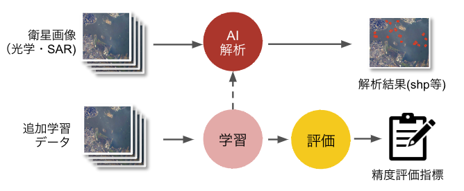
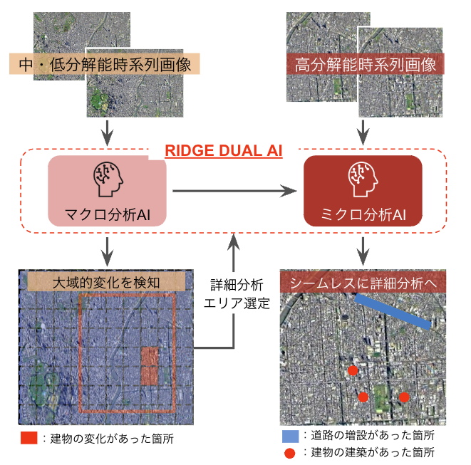
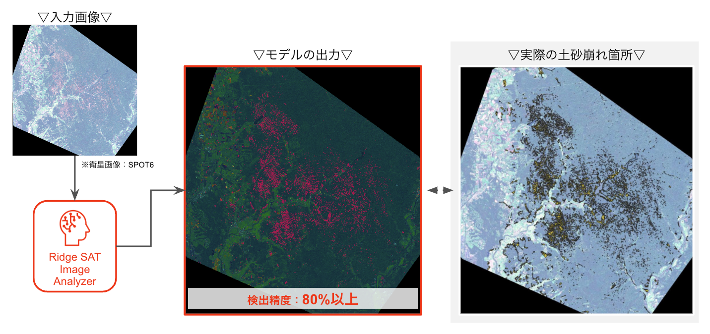

プロジェクト事例
技術とビジネスの視点をどのように融合させ、実際の課題解決に取り組んできたかを具体的な事例を通じて紹介します。
Ridge SAT Image Analyzer (RSIA)
誰でも簡単に衛星画像解析AIを用いた開発ができる統合型ツール。前処理などを具備。
技術的側面
- 衛星画像の前処理部分のカスタム（雲部分の処理、影除去、衛星解析向けの様々な補正など）
- AIモデルの選択（物体検出、セグメンテーション）
- 解析結果の可視化（地図上への表示、統計情報の表示）
- MLOps向け学習支援ツール・評価ツールなど
- 完全オンプレ環境での動作保証
ビジネス展開の課題
- 衛星画像の複雑なライセンス体系
- 官公庁や民間含めた現場チームの配置転換
- （大幅にハードルが下がってきてはいるが）現場理解のためのAI解析、衛星解析の難易度の高さ
衛星データ解析
環境構築
ビジネスモデル構築

RIDGE DUAL AI（変化検出）
国土地理院の日本全国の地図データ更新は、高解像度データの取得・処理に多大なコストがかかるという課題がありました。人口密集地は頻繁に更新できても、山間部などは更新が遅れる状況が生じていました。
開発したソリューション「RIDGE DUAL AI」
低分解能データでスクリーニングし、高分解能データの投入を最適化する二段階アプローチを開発しました：
- マクロ解析：低解像度衛星画像で広域をスクリーニング
- ミクロ解析：変化が検出されたエリアのみ高解像度解析を実施
ビジネス成果
この手法により、コスト削減と未観測エリアの可視化という二つの価値を創出しました。高価な画像データの購入枚数削減、人手による精査工数の減少、更新漏れの減少につながりました。国土地理院の地図更新業務での試行採用まで実現しています。
二段階解析
変化検出AI
コスト効率化
公共サービス

土砂災害（地すべり・土砂崩れ）への応用
2018年の北海道胆振東部地震後、広範囲で発生した土砂崩れの状況を迅速に把握するため、JAXAからの委託で人工衛星画像から土砂崩れ箇所を自動検出するAIシステムを開発しました。
技術的アプローチ
教師データ不足という課題に対し、2つのアプローチを組み合わせました：
- 教師あり学習：限られた土砂崩れデータを活用
- 異常検出：通常時の地形データから異常変化を検出
成果と学び
被災地全域を数秒で解析し、約80%の精度で土砂崩れ領域を検出できるシステムを構築しました。完璧な精度を追求するエンジニアに対し、ユーザーが求めていたのは「迅速で大まかな状況把握」だったという気づきも得られました。
教師あり学習
異常検出
災害対応
迅速性重視
